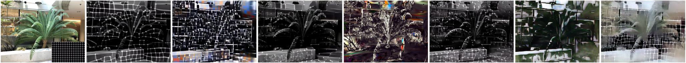
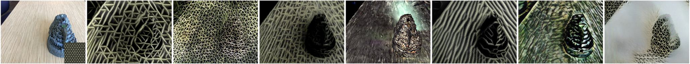
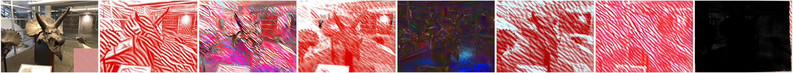
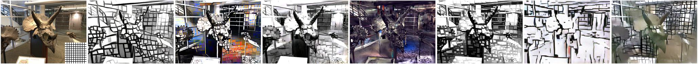
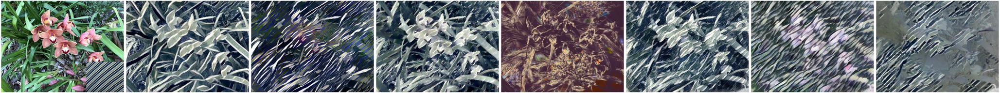

@article{liu2025gt,
title={Geometry-aware Texture Transfer for Gaussian Splatting},
author={Liu, Wenjie and Liu, Zhongliang and Shu, Junwei and Wang, Changbo and Li, Yang},
journal={arXiv preprint arXiv:2505.15208},
year={2025}
}